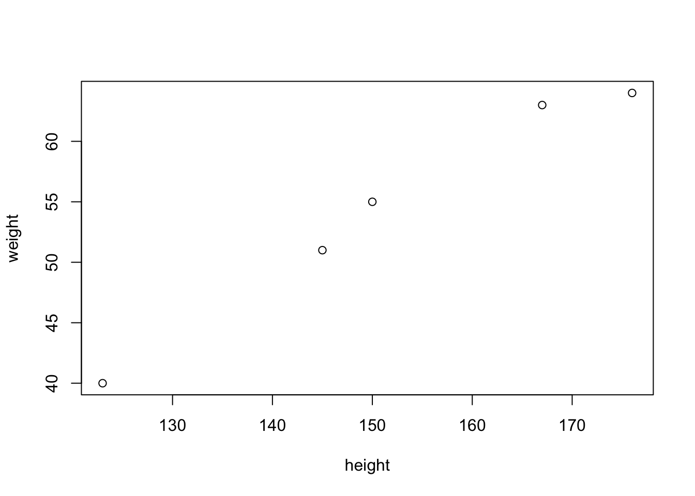

[1] 0.9893769
R是用于统计分析、绘图的语言和操作环境。R是属于GNU系统的一个自由、免费、源代码开放的软件，它是一个用于统计计算和统计制图的优秀工具。简单来说，R是一门统计计算语言，是一套开源的数据分析解决方案。
RStudio是为R语言设计的一种跨平台集成开发环境。其特色包括可客制化的软件套件视觉化界面与同团队开发的一系列数据可视化与出版工具。RStudio有免费的自由软件版本及收费的专业版本，并分为在本地电脑上执行的桌面版和与在服务器上执行而可由浏览器连接后使用的服务器版。
安装顺序(不能颠倒)
R语言
Rstudio
R是Rstudio的基础，必须先安装R，再安装Rstudio。
R is a programming language and environment for statistical computing and graphics, while RStudio is an integrated development environment (IDE) for R. Installing R first allows the computer to recognize the R language, and then RStudio can be installed on top of it to provide a user-friendly interface and additional tools for working with R. It is not necessary to install R first but it is a good practice as some features of RStudio are dependent on R.
官网安装包下载地址：https://cran.r-project.org/
点击MacOS对应选项， 下方红框标出的地方

在下载界面点击base，下方红框标出的地方

自行选择下载R语言版本， 下载最新的版本为妙

下载完成， 在”Finder→下载”中点击pkg文件， 一直按下一步可安装完成。
官网安装包下载地址：https://posit.co/download/rstudio-desktop/#download
点击下方红色标出地方，直接下载

下载完成， 在”Finder→下载”中点击dmg文件， 将app拖入application中即可。
安装完成
创建新project。具体方法如下图所示， 依次点击File->New Project => New Directory->New Project->输入Directory name（注意要用英文，别用中文）


创建好，就会出现下图所示